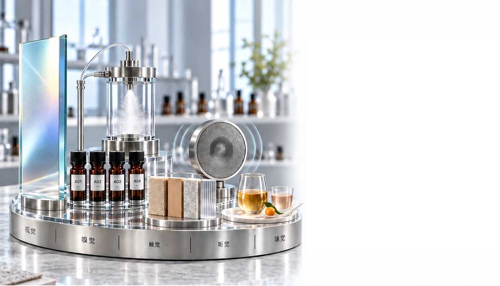

我们共同创造的成果
从概念到市场的四条整合路径
针对产品、
感官、品牌与功能创新，提供量身打造的开发服务。


产品
开发与 ODM
从产品构想到可零售的成品
我们将您的概念转化为针对目标市场设计的独特产品。
- 定制配方
- 产品形式与感官轮廓
- 包装与定位方向
- 从原型到生产的协调

香氛零售
产品开发
从香气概念到可上市的系列产品
我们开发独特的香氛产品，将您的品牌香气方向转化为可零售的产品形式。
- 高级香氛 · 家居香氛 · 个人香气
- 扩香产品 · 空间与织物喷雾
- 香气配方与产品形式
- 包装方向 · 打样 · 生产协调

定制感官与
香气设计
为您的品牌创造独特的感官语言
视觉 · 嗅觉 · 触觉 · 听觉 · 味觉
我们结合感官线索，围绕您的品牌与受众，设计一致而独特的体验。
- 视觉调性与光线 · 芳香与嗅觉方向 · 质地与材质
- 声音与味觉 · 整合体验准则

将香气融入
日常生活
从创造香气到亲身体验
我们将每种香气融入人们实际体验它的场所、产品与日常仪式。
- 抵达与迎宾 · 休息、专注与恢复
- 个人与居家仪式 · 零售接触点

功能性香气
创新
为明确目的设计香气
我们开发以证据为导向的香气概念，超越单纯令人愉悦的芳香，打造具有明确目的的产品与环境体验。
- 生物响应芳香概念
- 情绪 · 专注 · 放松 · 睡眠方向
- 活性芳香成分与证据审阅
- 产品、空间与原型应用设计

从功能性香气
到实际应用
为产品、空间与日常活动而设计
我们将功能性芳香概念转化为实用形式、递送系统与体验，并围绕特定使用时刻进行设计。
- 个人身心健康与香气疗法
- 护肤 · 个人护理 · 穿戴式形式
- 专注 · 放松 · 恢复 · 睡眠环境
- 递送特征 · 原型与体验评估

一起共同创造
从您的目标到可上市的独特体验
与我们分享您的产品构想、感官方向或功能目标。我们携手将其塑造成清晰、独特且可继续推进的成果。